ברוכים הבאים ל־LIAS
מדריך לעורך דין שמצטרף למשרד שעובד עם LIAS: התקנה, הפעלה, הגדרות ראשונות, הורדה ראשונה ולקוחות. כל התמונות כאן הן מסכים אמיתיים של התוכנה עם נתוני דוגמה בלבד.
1. מה זה LIAS
LIAS מוריד בשבילכם את המסמכים מאתרי בתי המשפט (נט המשפט, בתי הדין) לתוך המק, ומסדר אותם לפי תיק, סוג מסמך ותאריך.
כל בוקר תראו במסך הבית מה חדש: החלטות, בקשות, פרוטוקולים ומועדים קרובים, עם התראה לטלפון או לטלגרם.
הקבצים נשמרים במחשב שלכם ובגוגל דרייב של המשרד, ואפשר לצפות בהם גם מהטלפון ולשתף לקוחות בגישה מבוקרת.
2. התקנה על המק
דרישות
- מחשב מק עם macOS עדכני, חיבור לאינטרנט וכמה ג׳יגה־בייט פנויים לתיקים.
- חשבון Google (לחיבור לדרייב של המשרד).
- פרטי הכניסה שלכם ל־gov.il (תעודת זהות וסיסמה) — לאתרי בתי המשפט.
- מומלץ: הצפנת דיסק (FileVault) פעילה. בודקים בהגדרות המערכת ← פרטיות ואבטחה.
הורדה
התקנה
- בדף ההורדה, תחת Assets, לחצו על הקובץ שמסתיים ב־.dmg.
- פתחו את הקובץ שירד וגררו את LIAS לתיקיית Applications.
- פתחו את LIAS מתיקיית Applications (לא מתוך חלון ה־DMG).
בקשות הרשאה שיופיעו
- גישה לתיקיות (מסמכים / דיסק נשלף): אשרו. כך LIAS יכול לשמור את התיקים ולגבות לדיסק USB.
- התראות: אשרו, כדי לקבל הודעה כשמגיע מסמך חדש.
- מחזיק המפתחות (Keychain): macOS ישאל אם לאפשר ל־LIAS להשתמש בפריט שמור. הקלידו את סיסמת המק ובחרו אפשר תמיד (Always Allow). כך הסיסמאות שלכם נשמרות מוצפנות ב־Keychain ולא בקבצים. אחרי עדכון גרסה השאלה עשויה לחזור — שוב אפשר תמיד.
3. הפעלה ראשונה
בפתיחה הראשונה יופיע מסך הפעלת LIAS. המחשב צריך אישור מהמשרד לפני שמתחילים לעבוד. זה שלושה צעדים קצרים:
- כתבו את שמכם בשדה שם / משרד ולחצו צור קוד בקשה.
- יופיע קוד שמתחיל ב־LIAS-A-…. לחצו העתק ושלחו אותו למנהל המשרד — בוואטסאפ או במייל — יחד עם שמכם המלא. זה כל מה שצריך לשלוח.
- המשרד מאשר ושולח לכם בחזרה קוד שמתחיל ב־LIAS-L-…. הדביקו אותו בשדה השלישי ולחצו הפעל.
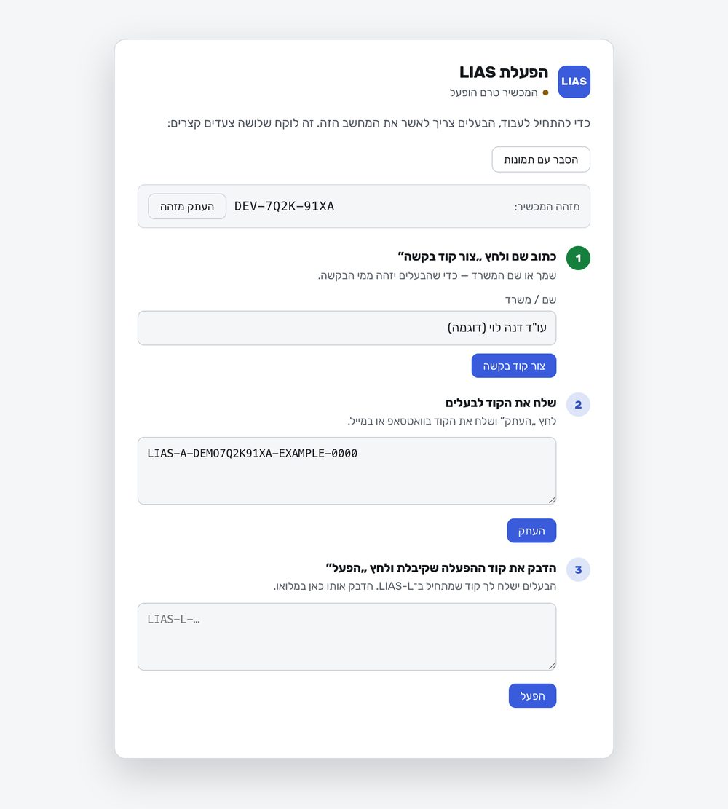
קוד ההפעלה שייך למחשב הזה בלבד. מחשב חדש = קוד בקשה חדש. הכפתור הסבר עם תמונות במסך עצמו מראה את אותו תהליך.
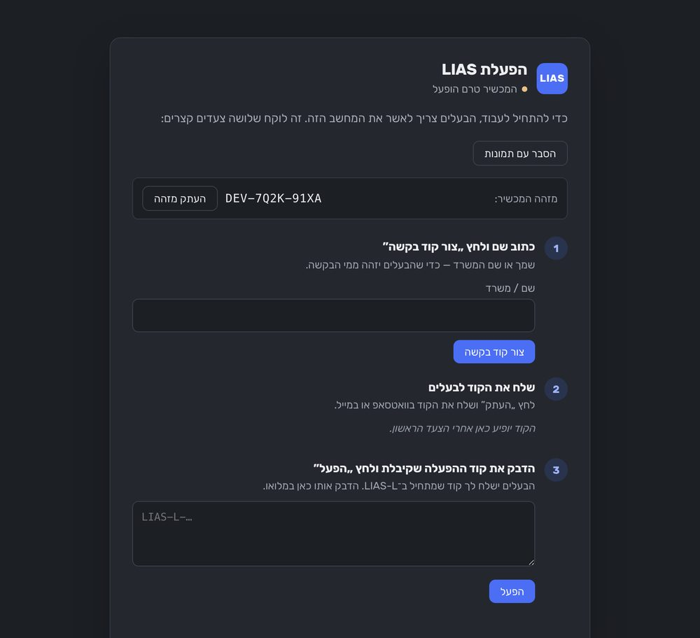
4. מה מגדירים קודם, לפי הסדר
כל ההגדרות נמצאות ב־הגדרות (בסרגל הצד). יש שם גם חיפוש בהגדרות, וכפתור הגדרת LIAS שמוביל אתכם צעד אחר צעד.
א. חיבור לגוגל דרייב
הגדרות ← דרייב וגיבוי ← חבר את Google Drive. נפתח דפדפן עם דף ההסכמה של Google: בחרו את חשבון ה־Google שהמשרד ביקש ואשרו. אם המשרד נתן לכם שם או מזהה של תיקיית שורש — הדביקו אותו ב"תיקיית שורש ב־Drive" ולחצו שמור.
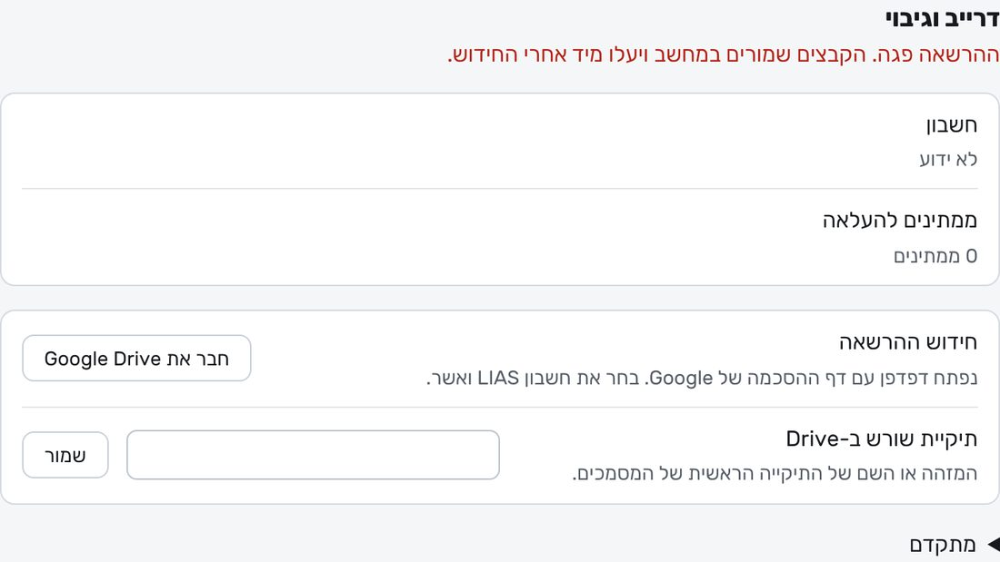
ב. פרטי הכניסה לבתי המשפט וקוד האימות
הגדרות ← אתרים וכניסה. תחת התחברות ל־gov.il הקלידו תעודת זהות וסיסמה. הם נשמרים במחזיק המפתחות של המק בלבד.
gov.il שולח קוד חד־פעמי (OTP) בכל כניסה. יש שתי דרכים:
- SMS לטלפון: אתם מקלידים את הקוד כשמתבקשים. פשוט, אבל דורש אתכם ליד המחשב.
- מייל (מומלץ): סמנו קבל את קוד האימות אוטומטית מהמייל ומלאו כתובת מייל וסיסמת אפליקציה. כך LIAS קורא את הקוד לבד וממשיך להוריד גם בלילה. כדי שזה יעבוד, ב־gov.il צריך לבחור שהקוד יישלח למייל הזה.
- היכנסו ל־myaccount.google.com ← אבטחה, וודאו שאימות דו־שלבי פעיל (בלעדיו האפשרות לא מופיעה).
- חפשו בחשבון "סיסמאות לאפליקציות" (App passwords).
- תנו שם, למשל LIAS, ולחצו צור.
- העתיקו את 16 האותיות לשדה סיסמת אפליקציה ב־LIAS (בלי רווחים) ושמרו. הסיסמה מוצגת פעם אחת — אין צורך לשמור אותה במקום אחר.
באותו מסך, תחת אילו תיקים להוריד, סמנו את הערכאות הרלוונטיות.
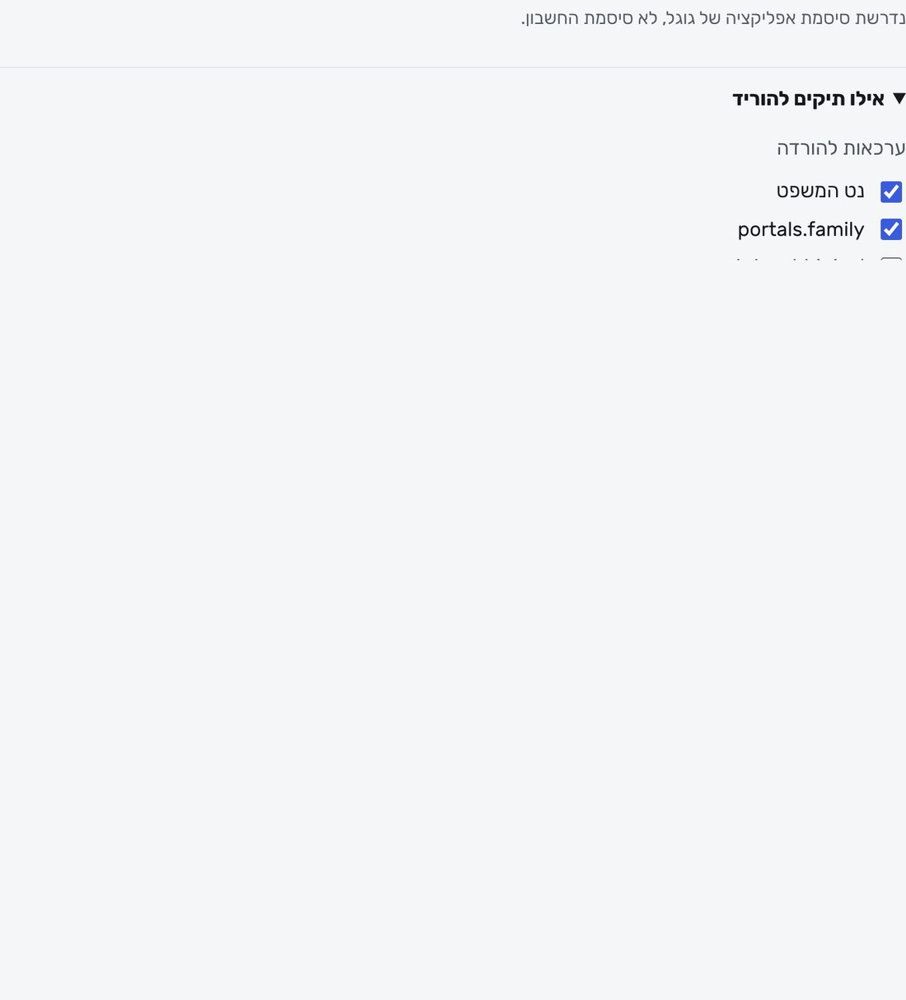
ג. התראות בטלגרם (רשות)
הגדרות ← התראות וטלגרם. כאן בוחרים מי מקבל התראה ועל אילו סוגי מסמכים. הבוט של המשרד מוגדר על ידי המנהל; אתם רק פותחים איתו שיחה בטלגרם (כדי שיוכל לשלוח לכם) ומוסיפים את עצמכם כנמען.
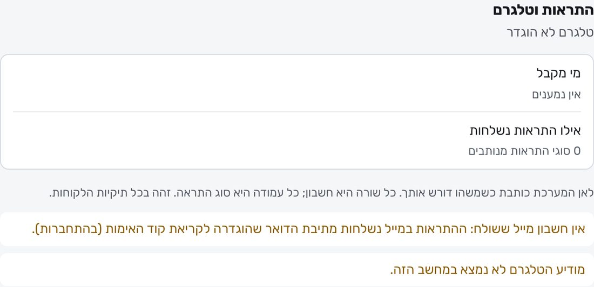
ד. אפליקציית הטלפון
- התקינו את האפליקציה מ־lias-ai-app.github.io/app.
- באפליקציה בחרו לשלוח בקשת חיבור (או סרקו קוד מהמק: הגדרות ← טלפון ותיאום ← צמד טלפון).
- הבקשה מגיעה למשרד, ל"בקשות ממתינות" באישור עורכי דין ומכשירים. אחרי האישור הטלפון מציג את התיקים.
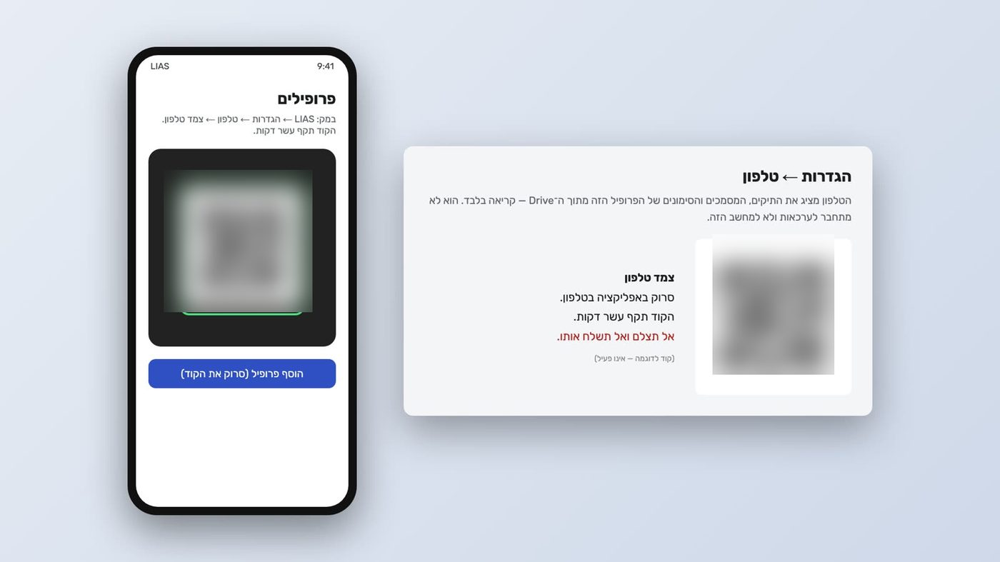
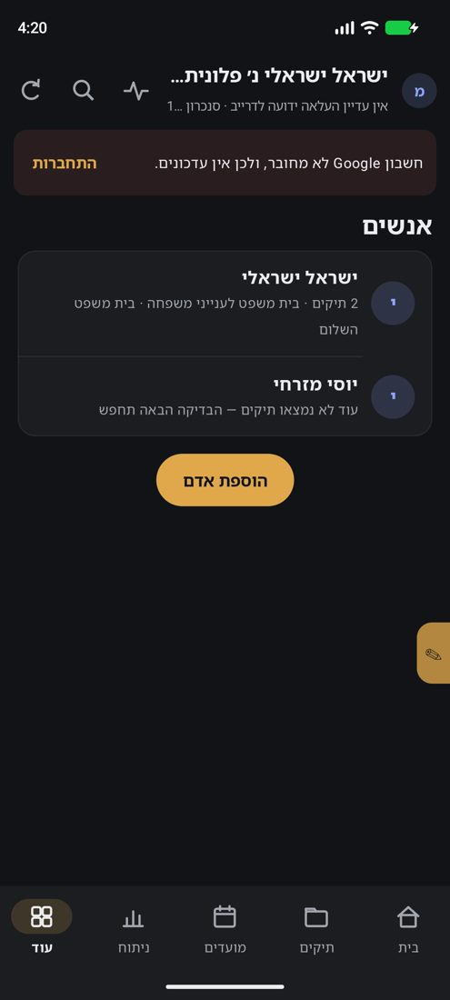
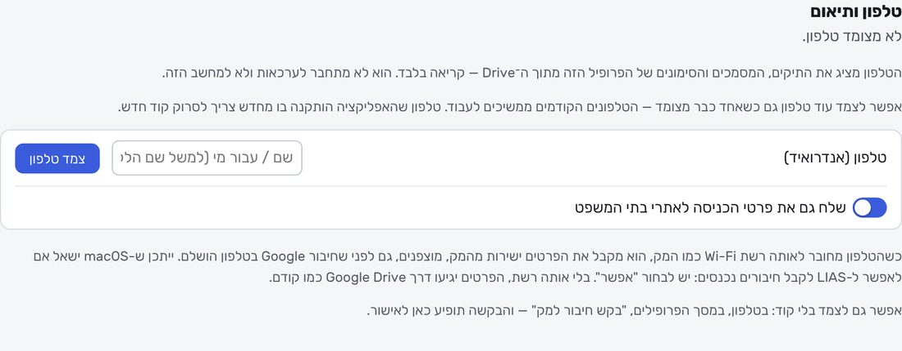
ה. התוסף לפיירפוקס — כניסה ל־gov.il מהטלפון
כשאתם לא ליד המק, אפשר להיכנס ל־gov.il מפיירפוקס בטלפון, והכניסה עוברת ל־LIAS.
- התקינו פיירפוקס בטלפון (Google Play).
- פתחו בפיירפוקס את lias-ai-app.github.io/addon ואשרו "הוספה" ל־LIAS Sign-in.
- במק: הגדרות ← התחברות ← "חיבור טלפון (פיירפוקס לאנדרואיד)" ← צור קוד חיבור, ופתחו את הקישור בפיירפוקס בטלפון.
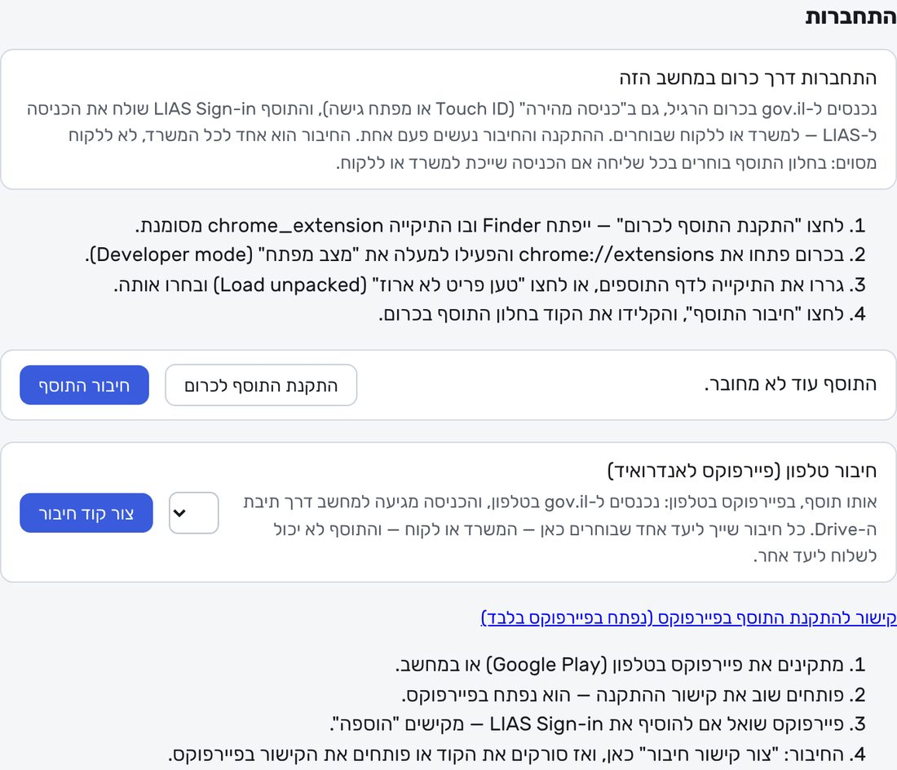
ו. גיבוי סודות לדיסק USB
הגדרות ← פרטיות ואבטחה ← גיבוי סודות. בחרו סיסמת גיבוי של 12 תווים לפחות, הקלידו אותה פעמיים ולחצו שמירה בדיסק USB. הקובץ מכיל את כל הסיסמאות והחיבורים, מוצפן. בלי סיסמת הגיבוי אי אפשר לשחזר — שמרו אותה במקום בטוח (לא באותו דיסק). צרו גיבוי חדש בכל פעם שאתם משנים סיסמה.
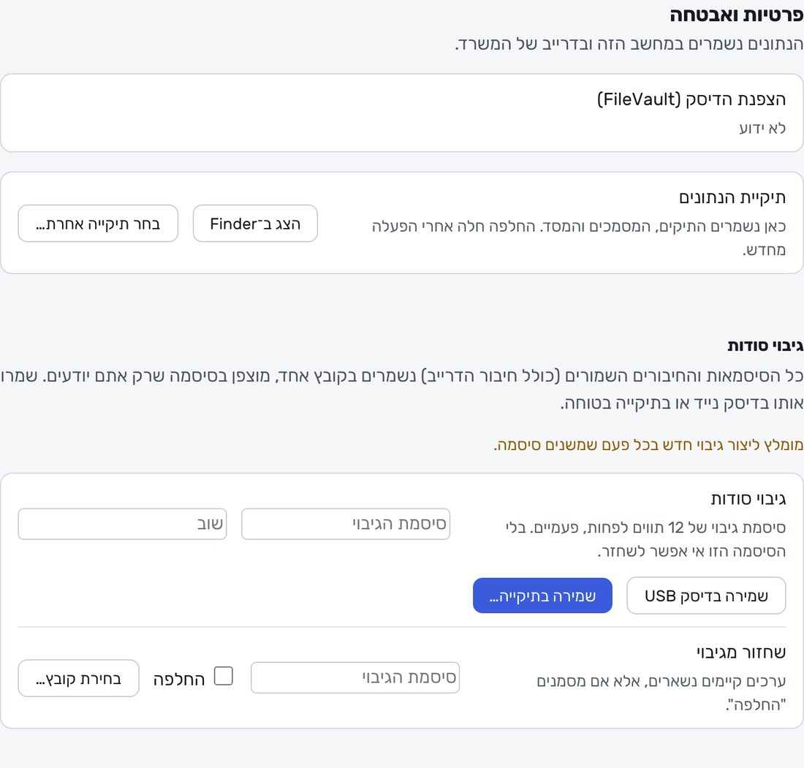
5. הורדה ראשונה של תיק
- ודאו שהגדרתם פרטי gov.il וערכאות (סעיף 4ב).
- הורדה ראשונה מתחילה מעצמה לפי התזמון (הגדרות ← הורדה ותזמון), או מיד מהכפתור להורדה בתוכנה. אם מתבקש קוד SMS — הקלידו אותו.
- הפעם הראשונה ארוכה יותר: מורדים כל התיקים הפתוחים. ההבאות מורידות רק מה שחדש.
איפה המסמכים מופיעים:
- מסך הבית — "מסמכים חדשים" של היום, ו"יומן קרוב" עם דיונים ומועדים.
- תיקים — כל תיק עם המסמכים שלו לפי תאריך וסוג. לחיצה על מסמך פותחת אותו.
- בדיסק — בתיקיית הנתונים (הגדרות ← פרטיות ואבטחה ← תיקיית הנתונים ← הצג ב־Finder), ובדרייב של המשרד.
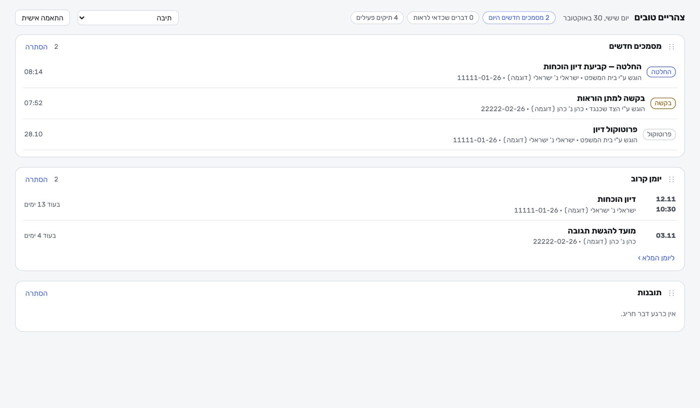
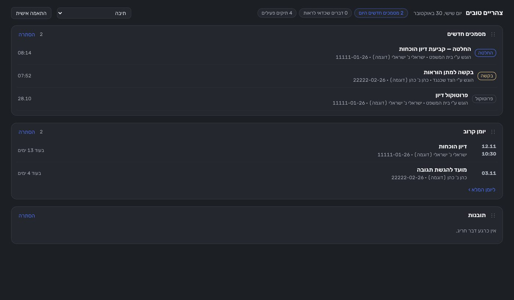
6. לקוחות
הוספת לקוח
במסך לקוחות לוחצים הוסף לקוח, כותבים את שם הלקוח ולוחצים צור לקוח וקישור. LIAS יוצר קישור כניסה ופותח את דף הלקוח.
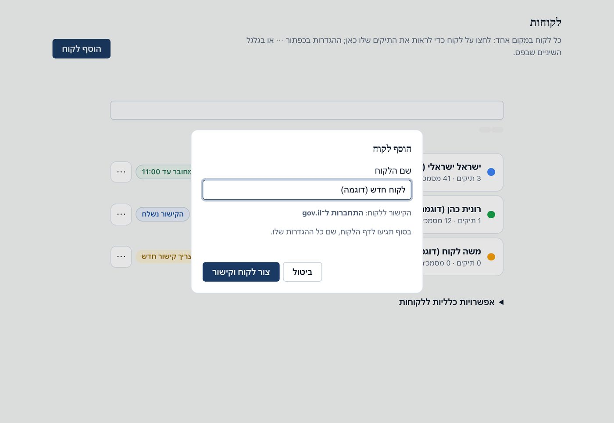
שליחת קישור כניסה
הלקוח נכנס דרך הקישור עם ה־gov.il שלו, וכך LIAS מוריד גם את התיקים שלו. בשורה של כל לקוח רואים את המצב: מחובר עד…, הקישור נשלח, או צריך קישור חדש — לחיצה על התגית שולחת קישור חדש (בוואטסאפ או בהעתקה). לקישור יש תוקף מוגבל.
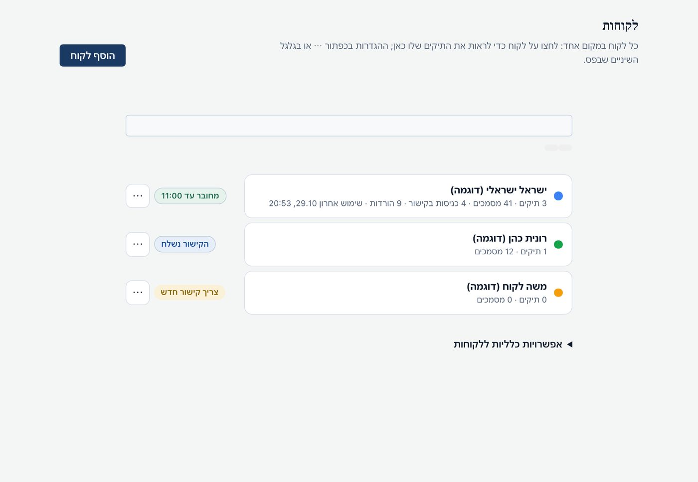
הרשאות לטלפון של לקוח
כשלקוח מתקין את האפליקציה ומבקש חיבור, הבקשה מופיעה למעלה במסך הלקוחות. משייכים אותה ללקוח ובוחרים הרשאה:
| הרשאה | מה הלקוח יכול |
|---|---|
| צפייה בלבד | רואה את התיקים והמסמכים שלו באפליקציה. לא מוריד ולא משנה. רק המק מוריד. |
| הורדה | הטלפון מוריד עבור הלקוח במקביל למק, בלי לשתף כניסה. |
| הורדה בשיתוף המק | הטלפון מוריד ומשתף את הכניסה שלו ל־gov.il עם המק. |
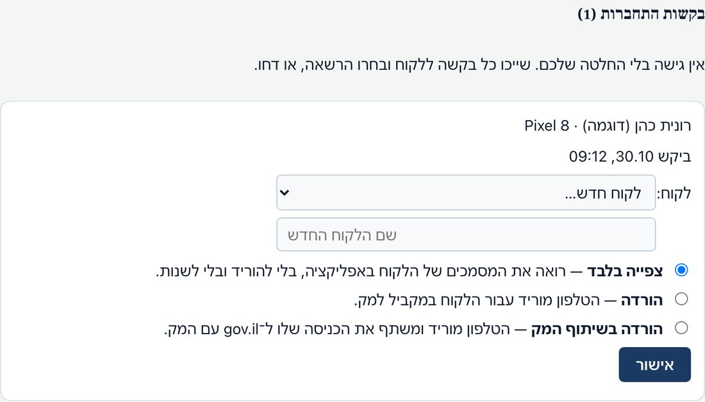
אפשר לשנות הרשאה או לבטל חיבור בכל רגע מדף הלקוח, וכל שינוי נרשם ביומן.
7. רשימות
מה שולחים למשרד
- שם מלא ואת קוד הבקשה LIAS-A-… (וואטסאפ או מייל למנהל המשרד).
- את כתובת חשבון ה־Google שבה תתחברו לדרייב, אם המשרד ביקש.
- שם הטלפון (למשל "הטלפון של דנה") כשאתם שולחים בקשת חיבור מהאפליקציה — כדי שיזהו אותה.
- בתקלה: צילום מסך של הודעת השגיאה (בלי סיסמאות) ושעה משוערת.
מה לעולם לא שולחים
- סיסמת gov.il, תעודת זהות יחד עם סיסמה, סיסמת המייל או סיסמת אפליקציה של Google.
- קודי SMS / קודי אימות חד־פעמיים — לא בצ׳אט, לא בוואטסאפ ולא בטלפון, גם לא למשרד.
- קוד צימוד או QR של הטלפון, וסיסמת גיבוי הסודות.
- צילום מסך של מסך "אתרים וכניסה" כשהשדות מלאים.
תקלות נפוצות
| מה רואים | מה עושים |
|---|---|
| "לא ניתן לפתוח את היישום" בהתקנה | הגדרות המערכת ← פרטיות ואבטחה ← פתח בכל זאת. |
| "ממתין לאישור גישה למחזיק המפתחות" | קורה אחרי עדכון. הקלידו את סיסמת המק בחלון של macOS ובחרו אפשר תמיד. זה לא מכשיר חדש ואין צורך בקוד חדש. |
| קוד ההפעלה נדחה | ודאו שהדבקתם את כל הקוד, מ־LIAS-L- ועד הסוף, ושהוא נוצר עבור קוד הבקשה של המחשב הזה. אם יצרתם קוד בקשה חדש — שלחו אותו שוב למשרד. |
| "לא הוגדרו פרטי התחברות — הבדיקות לא יוכלו לרוץ" | מלאו תעודת זהות וסיסמה ב"אתרים וכניסה". |
| ההורדה נעצרת על קוד אימות | הפעילו "קבל את קוד האימות אוטומטית מהמייל" ובדקו את סיסמת האפליקציה. ב־gov.il הקוד צריך להישלח לאותו מייל. |
| הדרייב מסומן באדום / "נעצר" | דרייב וגיבוי ← חבר מחדש ובחרו את אותו חשבון Google. |
| הטלפון לא מציג תיקים | ודאו שהמשרד אישר את הבקשה, ושהטלפון מחובר לאותו חשבון Google. משיכה של המסך למטה מרעננת. |
| בדיקת "אני לא רובוט" באתר בית המשפט | לא לנסות שוב ושוב — ניסיונות חוזרים מחמירים את החסימה. חכו מעט ונסו פעם אחת, או פנו למשרד. |